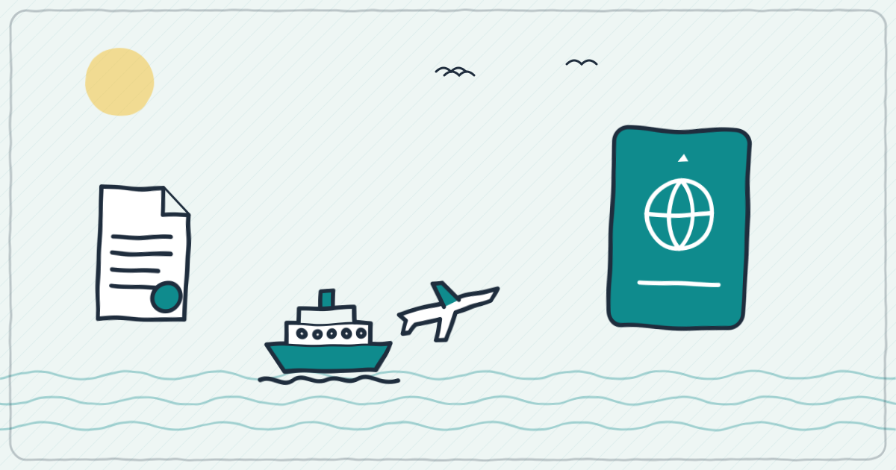

ESTA for Canadians Cruising From the US? Here's the Answer

No. Canadian citizens are visa-exempt for US visits and are not part of the ESTA program, so a valid Canadian passport book is all you need to fly to and sail from a US port. The exceptions are permanent residents of Canada (who follow their own nationality's rules), NEXUS used alone, and certain criminal records.
If you hold a Canadian passport, you can stop searching: no ESTA, no visa, nothing to apply for before a cruise from a US port. Pack a valid Canadian passport book and you are set for Miami, Fort Lauderdale, Port Canaveral, Galveston, New York or Seattle. The questions that remain are about who else is in your party, how long your passport is valid, and a couple of situations where Canadians do get stopped.
What is ESTA and why doesn't it apply to Canadians?
ESTA is the Electronic System for Travel Authorization, an online pre-screening that citizens of Visa Waiver Program countries (the UK, most of Europe, Australia, Japan and others) must complete before travelling to the US without a visa. It costs a fee, lasts two years and must be approved before boarding.
Canada was never put in that program because Canadian citizens already had a visa exemption for US visits dating back decades. You simply present your passport. US Customs and Border Protection records the entry electronically, and that is the whole process. The same exemption covers Alaska cruises precleared at Canada Place in Vancouver, Caribbean itineraries that touch the Bahamas, Mexico and the islands, and a Hawaii repositioning cruise from Vancouver or Pacific coastal run.
Which document does each traveller need?
- Canadian citizen flying to the port: a valid Canadian passport book. Nothing else.
- Canadian citizen sailing from Vancouver: the same passport, because US preclearance happens in the terminal; the Alaska-from-Vancouver passport note covers NEXUS and children.
- Canadian citizen driving to Seattle or another US port: the passport book is the safe choice. A few lines accept an enhanced driver's licence or NEXUS card at land crossings, but check your line before you rely on it.
- Canadian child, any age: their own passport if flying. Some lines accept a birth certificate on some sailings, but the airline will not.
- Permanent resident of Canada: the passport of their citizenship country, their PR card, and an ESTA or US visa if that nationality needs one.
- Dual Canadian-US citizen: either passport works for the cruise, but US law expects US citizens to enter the US on the US passport.
- Non-Canadian visiting Canada first: follow the rules for their nationality for both Canada and the US.
Each cruise line publishes a travel documents page by departure port. Royal Caribbean, for instance, states plainly that Canadians arriving by air need a passport. Wording differs by line, so read yours rather than a forum post.
Does NEXUS replace my passport for a cruise?
No, and this catches experienced border crossers. NEXUS speeds you through land crossings and airport lines, but it does not appear on cruise lines' lists of accepted boarding documents for fly-cruise passengers, and the airline will not board you to Miami without a passport anyway. Carry the passport; the NEXUS card may earn you a shorter queue at some terminals, nothing more.
The passport also protects you mid-cruise. Miss the ship in St. Maarten and you need a passport to fly to the next port or home. A NEXUS card gets you nowhere at a foreign airport.
How long must my passport be valid?
The US only asks that it be valid for the length of your visit. Cruise lines are stricter and commonly want six months of validity beyond the last day of the cruise, partly because ports of call such as some Caribbean islands and Central American countries apply that rule. If your passport expires within about eight months of the cruise, renew it now. Canadian passport processing times vary by season, and the 10-year passport costs a little more but saves a renewal.
Which exceptions actually stop Canadians?
- Criminal record. Certain convictions, including a single impaired driving conviction in some circumstances, can make a Canadian inadmissible to the US even though no visa is normally needed. A US entry waiver takes months and is not guaranteed, so sort it out before you book, not at Pearson preclearance.
- Long US stays around the cruise. Canadians can visit the US for up to six months, but US rules introduced in 2025 require foreign visitors staying 30 days or more to be registered. Canadians who arrive by air are generally registered automatically through the electronic I-94; those who drive across for a long winter stay may need to register themselves. Check CBP's current guidance if your cruise sits inside a longer Florida or Arizona winter.
- Unusual itineraries. Sailings that call in Brazil, parts of Asia, Australia or certain African ports can need visas even for Canadians. Your line's documents page will list them.
- Name mismatches. The name on the booking must match the passport exactly. A married name on the reservation and a maiden name in the passport means a conversation at check-in at best.
Five-minute document check before you book
- Confirm every passport is valid for at least six months after the cruise ends.
- Match every traveller's name on the booking to their passport, including middle names if the line asks for them.
- Read the cruise line's travel documents page for your departure port.
- For anyone who is not a Canadian or US citizen, look up their US entry requirements today and start the ESTA or visa process.
- Complete online check-in with passport numbers as soon as it opens, then screenshot the boarding pass. Leave the health questionnaire until its window opens close to sailing day.
For the trip itself, flying Toronto to Miami for a cruise covers preclearance timing at Pearson, the easiest Florida port from Montreal does the same for Quebec, and if your sailing is ever called off, what happens when the cruise line cancels explains refunds. Since the ship's onboard account will be in US dollars, paying for a cruise in CAD or USD is worth a read too.
Want this checked for your own sailing? A licensed cruise consultant can price it up and answer questions for free, with no obligation.
Ask a cruise expert →The bottom line for Canadians
Passport book, valid six months past the cruise, names matching. No ESTA, no visa. Spend the time you save checking the documents of anyone in your group who is not a Canadian citizen, because that is where the surprises live.
Questions people also ask
Why do some cruise websites tell me I need an ESTA?
Because they are written for British, European and Australian passengers, whose countries are in the Visa Waiver Program. Canada has a separate, older visa exemption for US visits, so the ESTA system does not apply to Canadian citizens at all.
My spouse is a permanent resident of Canada, not a citizen. What do they need?
Their own country's passport plus their Canadian PR card, and whatever the US requires of that nationality: an ESTA for Visa Waiver countries, a B-2 visitor visa for others. Visa appointments can take months, so start as soon as you book.
Can my kids cruise from Florida with just a birth certificate?
Not if you fly. Every Canadian child needs a passport to board a flight to the US. Some lines accept a birth certificate for young children on closed-loop sailings, but a passport removes every doubt and lets you fly home in an emergency.